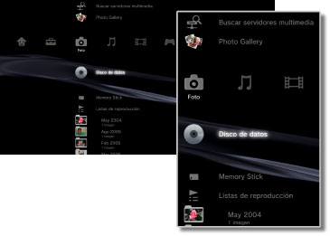

Foto > Categoría Foto
Categoría Foto
En  (Foto) se muestran los siguientes iconos. Los iconos pueden variar en función de las condiciones de uso.
(Foto) se muestran los siguientes iconos. Los iconos pueden variar en función de las condiciones de uso.

 |
Buscar servidores multimedia | Inicia una búsqueda de servidores multimedia DLNA conectados en la misma red. |
|---|---|---|
 |
Utilización de Photo Gallery | Utilice esta aplicación para mejorar la experiencia de visualización de fotografías guardadas en el sistema PS3™. |
 |
Guardar captura de pantalla | Permite guardar capturas de pantalla de software de formato PlayStation®3 durante el juego. Esta opción está disponible únicamente si el software al que se está jugando admite esta función. |
 |
Servidor multimedia | Permite conectarse a los servidores multimedia DLNA y visualizar las imágenes almacenadas. El icono mostrado variará en función del tipo de servidor. |
  |
Disco de datos | Permite visualizar los archivos de imagen almacenados en discos grabables compatibles como, por ejemplo, CD-R o DVD-R. |
 |
Memory Stick™ | Permite visualizar archivos de imagen guardados en un soporte Memory Stick™.* |
 |
SD Memory Card | Permite visualizar archivos de imagen guardados en una SD Memory Card.* |
 |
CompactFlash® | Permite visualizar archivos de imagen guardados en una tarjeta CompactFlash®.* |
 |
PSP™ (PlayStation®Portable) | Permite visualizar archivos de imagen guardados en un soporte Memory Stick™ de un sistema PSP™. |
 |
PSP™ (PlayStation®Portable) | Permite visualizar archivos de imagen guardados en el sistema de almacenamiento del sistema PSP™go. |
 |
Cámara digital | Permite visualizar archivos de imagen guardados en una cámara digital compatible con el sistema PS3™. |
 |
WALKMAN®/ATRAC Audio Device (WALKMAN®) | Permite ver archivos de imagen guardados en un dispositivo de audio WALKMAN®/ATRAC Audio Device (WALKMAN®). |
 |
ATRAC Audio Device | Permite ver archivos de imagen guardados en un dispositivo ATRAC Audio Device. |
 |
Dispositivo USB | Permite visualizar archivos de imagen guardados en un dispositivo de almacenamiento masivo USB. |
 |
Listas de reproducción | Puede crear listas de reproducción o modificar o reproducir listas de reproducción ya creadas. |
 |
Imágenes de cámara digital | Permite visualizar archivos de imagen guardados en la carpeta DCIM de una cámara digital. |
|
(carpeta) | Este icono aparece cuando existen carpetas que se han creado en un ordenador. |
 |
(archivos guardados en el almacenamiento del sistema) | Permite visualizar archivos de imagen guardados en el almacenamiento del sistema del sistema PS3™. Se mostrarán las imágenes en miniatura correspondientes. |
| * |
Para poder utilizar los soportes de almacenamiento con determinados modelos del sistema PS3™, necesitará un adaptador USB apropiado (no incluido). Cuando los utilice con un adaptador USB, los soportes de almacenamiento aparecerán como |
|---|
 (Dispositivo USB).
(Dispositivo USB).Notas
- Si desea obtener más información acerca de DLNA, consulte
 (Ajustes) >
(Ajustes) >  (Ajustes de red) > [Conexión al servidor multimedia] en esta guía.
(Ajustes de red) > [Conexión al servidor multimedia] en esta guía. - Es posible que, en raras ocasiones, los discos u otros soportes no funcionen correctamente al reproducirlos en el sistema PS3™. Esto se debe principalmente a las variaciones en el proceso de fabricación o codificación del software.
- Es necesario disponer de un televisor compatible con el formato 3D que cumpla con la normativa para 3D y de un cable HDMI de alta velocidad para poder visualizar contenido en 3D.